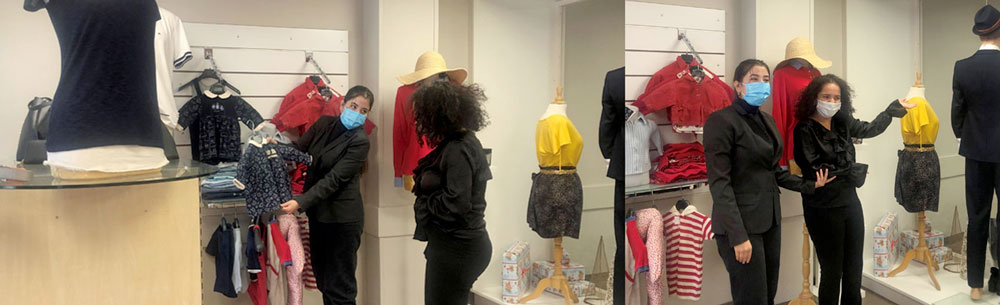

|
Au Sommaire :
👉 Portes Ouvertes sur RDV le samedi 20 mars
👉 Un BTS Audiovisuel en formation initiale
👉 Donnez du sens à votre taxe d'apprentissage
👉 L'école des vins et spiritueux
Nous sommes prêts à vous accueillir !
Depuis plus d'un an, notre pays traverse une crise qui nous aura permis de changer nos habitudes et trouver des solutions innovantes pour continuer à former dans les meilleures conditions possibles les jeunes qui nous sont confiés.
Aujourd'hui, tout comme vous, nous avons les yeux tournés vers l'avenir et c'est dans cet esprit que nous organisons des Portes Ouvertes sur rendez-vous pour garantir à tous les mesures de distanciation sociale.
Comme vous pourrez le découvrir dans cette Info'News, samedi 20 mars, nous faisons tout pour vous accueillir !
Se tourner vers l'avenir, c'est également proposer des formations de qualité et des dispositifs innovants de la maternelle aux études supérieures dans nos 7 établissements à taille humaine.
Ainsi, nous avons créé une école des vins et spiritueux que nous avons inauguré devant un public restreint en octobre de l'année dernière. Et même si actuellement, du fait du couvre feu, elle est fermée, je vous invite à lire l'article et à aller sur le site de la Wine and Spirit School pour découvrir les formations proposées aux amateurs comme aux professionnels et à vous inscrire pour recevoir les actualités dès la réouverture que nous espérons rapide.
Dans le même esprit, une vidéo de présentation de notre Institution a été réalisée par les lycéens et étudiants du BAC Professionnel Systèmes numériques et des BTS Communication, entourés bien sur par leurs formateurs. N'hésitez pas à la visionner pour découvrir la diversité de Notre-Dame La Riche, elle est sur la page d'accueil de notre site web.
Et comme, nous avons remarqué que la formation en audiovisuel était plus que rare en Région Centre Val de Loire mais également sur une grosse partie de l'ouest de la France, nous avons mis en place un BTS Audiovisuel avec 2 options. Je vous invite à le découvrir sur notre site web ou dans l'article ci-dessous.
Comme vous le voyez, nous sommes toujours tournés vers l'avenir, mais toutes ces actions ne seraient pas possibles si nous n'avions pas le soutien de nombreux dirigeants ou décideurs qui nous font confiance en nous versant la part libre de la Taxe d'Apprentissage. Et innovation cette année, chacun contribuera au projet qui l'intéresse, nous en avons sélectionné 4 que je vous invite à découvrir dans cette newsletter.
J'espère sincèrement vous rencontrer à l'occasion de nos Portes Ouvertes sur rendez-vous.
Bonne lecture à toutes et à tous.
Au plaisir d'échanger, n'hésitez pas à nous faire part de vos remarques, avis ou suggestions..., elles nous sont toujours précieuses pour progresser.
Benoît VISSE
Directeur Coordinateur de l'Institution Notre-Dame La Riche
Nous faisons tout pour vous accueillir
le samedi 20 mars de 9h30 à 13h, sur rendez-vous
Les équipes pédagogiques de chaque établissement de Notre-Dame La Riche vous accueilleront individuellement par famille le samedi 20 mars de 9h30 à 13h. Pour une bonne organisation, la prise de rendez-vous est obligatoire au 02 47 36 32 00 ou en vous inscrivant sur www.notredamelariche.fr/PO.
Et si certains d'entre vous, et on peut le comprendre, ne veulent pas se déplacer, depuis maintenant 1 an, vous pouvez sur notre site web vous préinscrire pour tous les niveaux de la maternelle aux BTS en formation initiale. Pour découvrir la diversité de nos formations, notre site web, wwww.notredamelariche.fr, a entièrement été refait l'année dernière et est régulièrement remis à jour. Il pourra vous éclairer sur les différentes formations dispensées dans notre Institution dans l'un des 7 établissements à taille humaine.
Vous pouvez également avoir un aperçu de notre Institution au travers d'une vidéo présente sur notre site web (pensez à activer le son).
• L'Ecole de la maternelle au CM2 avec un apprentissage précoce de l'anglais et une ouverture sur l'international
• Le Collège de la sixième à la quatrième, 3 heures d'aide personnalisée sont incluses dans l'emploi du temps de chaque collégien.
• Le Pôle orientation troisième / seconde, un dispositif unique en France pour faciliter l'orientation.
• Le Lycée général avec 10 options au choix dont le théâtre, une bonne manière pour travailler sa communication orale.
• Le Lycée technologique avec la filière STMG, STHR (Hôtellerie, restauration) et la filière STI2D Technologies industrielles et Développement durable) qui permet à certains étudiants de continuer avec réussite dans des études d'ingénieur.
• Le Lycée professionnel pour préparer un des 7 BAC proposés (commerce, accueil, numérique, la gestion...) et une 3è prépa métiers et un CAP Commerce
• l'Enseignement supérieur avec 6 BTS reconnus par l'Etat, en formation initiale, avec une inscription pour la plupart hors Parcoursup.
• L'Ecole Hôtelière avec des formations débouchant sur un BAC professionnel, un BAC Technolgique, un BTS ou des mentions complémentaires en alternance en 1 an (Accueil/Réception, Sommellerie, Barman)
N'hésitez pas à nous contacter au 02 47 36 32 00 pour prendre rendez-vous ou compléter le formulaire sur notredamelariche.fr/PO pour être rappelé.
Et comme nous vous l'annoncions au début de cet article, si vous ne souhaitez pas vous déplacer, n'hésitez pas à utiliser le formulaire de préinscription.
Le samedi 20 mars de 9h30 à 13h, on vous attend nombreux dans des conditions sanitaires appropriées compte tenu de la situation !
Un BTS Audiovisuel en formation initiale
Pas de film sans comédiens, pas d’émission radio ou télé sans animateur. Néanmoins, le secteur de l'audiovisuel ne se limite pas aux personnalités qui passent à l’écran.
Sur les plateaux comme en studio d’enregistrement, à la régie comme en salle de montage, les professionnels de l’image et du son mettent leurs compétences artistiques et techniques au service des productions audiovisuelles.
Et nous connaissons tous notre appétence au moment où la digitalisation prend de plus en plus de place dans nos vies pour le son et l'image.
C'est pour pouvoir travailler dans cette filière d'avenir avec de nombreux débouchés que le BTS Audiovisuel en formation initiale est dispensé au sein de l'Enseignement Supérieur Notre-Dame La Riche.
2 options vous sont proposées : Option Gestion de production ou Option Techniques d'ingénierie et exploitation des équipements. A l'issue de la formation, l'étudiant obtiendra un diplôme reconnu par l'Etat de niveau 5 - Bac+2 dans un des rares établissements du Grand Ouest de la France à permettre cette formation.
Profiter de nos Portes Ouvertes sur rendez-vous le samedi 20 mars de 9h30 à 13h pour venir découvrir cette formation ou rendez-vous sur www.notredamelariche.fr/bts/audiovisuel/
Bon à noter : l'inscription au BTS audiovisuel de l'Enseignement Supérieur Notre-Dame la Riche se fait hors Parcoursup, une tranquillité supplémentaire pour connaître son point de chute rapidement pour la Rentrée 2021 !
Ce BTS est également dispensé en formation par Alternance au sein de l'ISCB, Centre de Formation implanté dans les locaux de l'Institution, rendez-vous sur www.iscb.fr/audiovisuel.html
Et pour connaître toutes les formations de l'enseignement Supérieur Notre-Dame la Riche, l'adresse est simple : www.notredamelariche.fr/bts/
Donnez du sens à votre taxe d'apprentissage

Pour 2021, les modalités de Collecte de la Taxe d’Apprentissage sont identiques à 2020. La Taxe d’Apprentissage est aujourd’hui calculée sur 0,68% de la masse salariale 2020. 13% de cette somme sont destinées aux lycées professionnels et technologiques.
Les lycées (Technologique et/ou Professionel) Notre-Dame La Riche sont habilités à recevoir la taxe d'apprentissage.
En choisissant dès aujourd'hui Notre-Dame La Riche, vous donnez du sens à votre versement en contribuant au financement d'un des 4 projets près de chez vous que nous vous soumettons :
• Réduire la discrimination numérique en équipant nos jeunes du Lycée Professionnel de tablettes à visée pédagogique.
• Poursuivre l’aménagement de nos salles informatiques au Lycée Technologique.
• Contribuer à la création d’un studio d’enregistrement (projet d’élèves en filière Systèmes Numériques).
• Poursuivre l’aménagement et l’équipement d’un laboratoire Vente pour les élèves en filière commerce et vente.
Pour connaître le mode d'emploi pour verser la part libre de votre Taxe d'apprentissage, le détail des projets..., rendez-vous dès aujourd'hui sur www.notredamelariche.fr/TA/
Bon à noter : Compte tenu de la situation particulière que nous vivons, les versements ne seront débités qu'après le 15 avril 2021.
PS : Vous n'êtes pas concerné par cette information, devenez notre ambassadeur, parlez-en à votre employeur. Merci d'avance !
L'Ecole des Vins et Spiritueux Notre-Dame La Riche
Inaugurée en octobre dernier devant un public restreint du fait des conditions sanitaires, la Wine and Spirit School, l'Ecole des Vins et Spiritueux est avant tout un lieu de cours qui permet aux participants de tous niveaux, amateurs, passionnés ou professionnels, de mettre en pratique les connaissances acquises, tout en évoluant dans un espace pédagogique concret. Le choix des vins et eaux-de-vie analysés et dégustés sont dignes des plus belles maisons étoilées.
A partir de 50 € par personne, différentes formules vous sont proposées:
• des cours de 2 heures pour apprendre les bases et techniques de la dégustation, découvrir la richesse des terroirs
• des ateliers de 4 heures autour de la découverte des vins & spiritueux, de leur processus de fabrication...
Ces formules enseignées par le Directeur, Chef sommelier avec 25 ans d’expérience dans des grandes tables étoilées du monde, et les enseignants de l'Ecole Hôtelière Notre-Dame La Riche, sont ouverts aux particuliers, mais également aux entreprises pour leur permettre de passer un moment convivial avec leurs prospects, clients ou tout simplement avec leurs collaborateurs.
Et même si dans l'immédiat, compte tenu des conditions sanitaires, nous avons dû interrompre temporairement l'activité de cette école des vins, vous pouvez déjà vous préinscrire à des cours ou ateliers en fonction des thèmes qui vous intéressent pour faire partie des premiers contactés dès que la situation sanitaire évoluera.
Pour découvrir les différents thèmes proposés, vous préinscrire..., nous vous invitons à visiter le site web de cette école : www.wineandspiritschool.fr
Bon à noter : La Wine and Spirit School vous permet d'offrir des chèques cadeaux à conditions préférentielles valables jusqu'à fin 2021 pour un cours ou un atelier, une idée originale à l'occasion d'un anniversaire, une fête ou tout simplement pour faire plaisir. Rendez-vous sur www.wineandspiritschool.fr/cadeau.html
PS : L'ensemble des enseignements ont lieu au Restaurant pédagogique La Gabarre au cœur des Halles, 13 rue de la Bourde à Tours
Une remarque, une question ou pour nous contacter :
Institution Notre-Dame La Riche | 26 rue de la Bourde, 37000 TOURS
Tél. 02 47 36 32 00
| ndlr@ndlr.fr
| www.notredamelariche.fr
Suivez nos actualités sur :
|